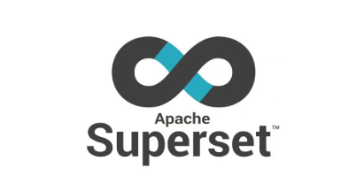

Propuesta para aprobación · Noviembre 2026
Plataforma de Analítica Autoservicio
Dimensión, alcance y arquitectura. El negocio arma sus propios tableros; detrás, una base robusta de datos y medidas certificadas.
El problema · Hoy con Power BI Server
Cada reporte redefine sus métricas
Números que no cuadran
En Power BI Report Server cada archivo redefine sus cálculos; la misma venta da distinto según el reporte y se pierde confianza.
El área de datos es el cuello de botella
Los usuarios no pueden armar sus propios tableros: cada cambio o reporte nuevo entra en la cola técnica.
Excel como destino final
Al no tener autoservicio gobernado, el negocio exporta a Excel y rearma a mano, sin versiones ni seguridad.
La propuesta
Medidas definidas una vez.
Tableros creados por el negocio.
Lo que ve el usuario
Arrastrar y soltar medidas certificadas · catálogo de gráficos · plantillas por área · sin DAX ni SQL
La robustez de atrás
Lago de datos desde el DWH y los sistemas · modelado · capa semántica con medidas certificadas · seguridad por fila · memoria rápida (resúmenes precalculados)
Benchmark 2026
Qué tomamos de cada plataforma
| Plataforma | Dónde viven las medidas | Lo que adoptamos |
|---|---|---|
| Power BI / Fabric | Modelo semántico con DAX y RLS | Un modelo compartido para muchos reportes |
| Databricks AI/BI | Metric views en Unity Catalog (YAML) | Medidas separadas de dimensiones; certificación |
| Looker | LookML versionado en git | Medidas como código, con revisión y pruebas |
| Tableau | Orígenes publicados + Pulse | Métricas seguibles con alertas |
| Superset / Metabase | Datasets y modelos open source | Base visual open source y sin licencias |
| Cube Core / dbt | Capa semántica independiente del front | El corazón de nuestra capa semántica |
Conclusión del benchmark
Todos los líderes convergen en el mismo patrón: medidas gobernadas una vez y el negocio compone encima.
Por eso la capa semántica es una pieza propia e independiente, y el front se vuelve intercambiable.
Dimensión · AS-IS vs TO-BE
De cargar con cada tablero a gobernar una sola base
AS-IS · Hoy
El Analista / Equipo de Datos crea cada tablero y carga con su funcionalidad, mantenimiento y optimización — acumulando toda la cola de pedidos del negocio.
TO-BE · Consume
Gerencia, tiendas, comercial
Ve tableros publicados, filtra, exporta y recibe alertas con números consistentes.
TO-BE · Crea (autoservicio)
Analistas de área
Arman sus propios tableros con medidas certificadas y plantillas, sin entrar a la cola técnica.
TO-BE · Garantiza y evoluciona
Equipo / Analistas de datos
Dejan de mantener cada tablero en cola; se enfocan en datos, certificar medidas, SQL, seguridad y optimización central.
En Fase 0 confirmamos: usuarios concurrentes, volumen del DWH, sistemas fuente, frecuencia de carga y nube vs. on-premise.
Alcance
El MVP: un dominio de punta a punta
En el MVP · Ventas y Margen
- Ingesta del DWH (y 1er sistema fuente según Fase 0)
- Lago bronce → plata → oro de Ventas
- 20–30 medidas base certificadas (cientos de vistas)
- Constructor arrastrar y soltar · 10–12 gráficos
- 3 plantillas (Gerencial, Tienda, Categoría) + SSO y RLS
Fases siguientes
- Inventario y Promociones
- Medidas en borrador por área y flujo de certificación
- Alertas y suscripciones por correo
- Preguntas en lenguaje natural (IA)
- Modelos predictivos de demanda
Ejemplos de medidas base
Venta Bruta · Descuentos · Devoluciones · Venta Neta · Costo · Margen $ · Margen % · Unidades · Tickets · Ticket Promedio · Variación YoY/MoM · % Meta · Mix % · SKUs y Tiendas Activas (cruzables por Tienda, Región, Categoría, Marca, SKU, Canal y Fecha)
Fuera de alcance: reemplazar el DWH actual, migrar todos los reportes existentes, usuarios externos.
Arquitectura de 5 capas y flujo de datos
De las fuentes al usuario · 100+ concurrentes
Las dos opciones · Ambos $0 en licencias de BI
Dos caminos sobre la misma base
Opción A · Interfaz desde cero
Front a la medida (React + ECharts)
Programamos toda la pantalla de gráficos y arrastrar/soltar desde cero sobre las medidas de Cube.
- Experiencia 100% a la medida
- Plantillas e IA donde queramos
- Doble tiempo y mantenimiento propio permanente
7–9 meses · 6–8 personas
Opción B · Recomendada
Interfaz base open source

Adaptamos Apache Superset (gratuito, Apache 2.0) con nuestra marca, conectado a Cube por su API SQL.
- Pantalla probada, 40+ gráficos listos
- Misma plataforma propia, mitad de tiempo
- Equipo núcleo de 3 + agentes + apoyo puntual TI
4–5 meses* · 3 personas + IA
*4–5 meses (MVP DWH; 5–6 meses si incluye CDC ERP) tras cerrar infra/accesos en Fase 0. Sin agentes equivaldría a 4–5 personas. Costos reales: solo infraestructura y tokens de agentes (se cierran en Fase 0).
Cómo se ve la Opción B · $0 licencias
Apache Superset conectado a nuestro modelo

Conexión al modelo
DWH / Sistemas → Lago Iceberg + dbt (Oro) → Trino → Cube Core (API SQL tipo PostgreSQL) → Apache Superset
Caso de negocio · Buy vs. Build (TCO)
Por qué Opción B frente a seguir igual o comprar SaaS
| Criterio | Status Quo (Power BI Server) | SaaS Comercial (PBI Pro / Fabric) | Opción B · Base Superset (Recomendada) | Opción A · Interfaz desde cero |
|---|---|---|---|---|
| Licencias BI por usuario | Sin autoservicio gobernado | Recurrentes mensuales (crecen con usuarios) | $0 (Apache 2.0) | $0 (open source) |
| Costos reales (TCO) | Horas perdidas + Excel | Licencias + capacidad cloud (lock-in) | Infraestructura + operación + tokens IA | Infra + doble equipo + mantenimiento |
| Tiempo al MVP | Sin solución | 3–4 meses (atado al proveedor) | 4–5 meses (tras Fase 0) | 7–9 meses |
| Propiedad y control | Limitado | Dependencia de proveedor y precios | 100% propia · sin lock-in | 100% propia |
| Reutilización futura | Baja | Difícil migrar fuera | 100% (base + Cube sirven para A o PBI) | 100% |
En Fase 0 (Semana 4) entregamos la comparativa financiera cerrada a 3 años (TCO exacto: infraestructura + operación vs. licencias Power BI/Fabric) con la dimensión confirmada.
Recomendación
Opción B ahora.
Opción A como evolución.
Validamos adopción y medidas con usuarios reales en 4–5 meses. Pasar al front propio solo cambia la capa visual: datos, medidas y seguridad se reutilizan.
Plan de fases · Puertas de aprobación (Stage-Gates)
De fundaciones a escala con criterios medibles
Fase 0 · 4 sem
Fundaciones y PoC
Dimensión, TCO vs PBI/Fabric, accesos TI/SSO, contratos, agentes y PoC de 5 medidas.
◆ TCO + accesos + PoC OK
Fase 1 · Meses 2–3
Datos + BI en paralelo
DWH→Oro (Carril 1) y Cube + Superset con fixtures (Carril 2); conciliación real.
◆ 100% conciliado + firma negocio
Fase 2 · Meses 4–5
MVP autoservicio
Integración prod, carga/estrés, auditoría RLS, 3 plantillas y piloto con champions.
◆ ≥70% champions · p95 <5s
Fase 3 · Meses 6–9
Escalar dominios
Inventario, Promociones, alertas, IA en lenguaje natural y decisión Opción A.
◆ Adopción ≥75% → eval. A
El reloj del MVP (Meses 2–5) corre tras cerrar accesos DWH, infraestructura y firma de medidas en Fase 0. Si el piloto no cumple la meta en Mes 5, los datos y medidas certificadas siguen siendo 100% reutilizables.
Equipo núcleo de 3 + apoyo TI + agentes
Roles claros y continuidad operativa
Dirección · Jefe (Product Owner)
Gobierno y aprobación
Prioriza alcance y medidas con negocio, gestiona accesos/TI y aprueba cada puerta Go/No-Go al cierre de sprint.
Carril 1 · Rafael / Osmerlys + IA
Datos (Módulos 2 y 3)
Dirige agentes de ingesta y modelado dbt (Bronce→Oro). Valida tablas contra el esquema en contracts/.
Carril 2 · Osmerlys / Rafael + IA
Semántica y BI (Módulo 4)
Dirige agentes de Cube, RLS y Superset usando datos sintéticos en DuckDB, sin esperar a la ingesta real.
Módulo 1 (Infra) y Privacidad IA
TI / DevOps respalda el Módulo 1 (infra, SSO y firewalls con SLA en Fase 0). Los agentes se crean juntos en Fase 0 y operan solo sobre esquemas y datos sintéticos: cero datos reales de negocio salen a LLMs externos.
Ejecución asistida por IA
8 agentes especializados, siempre aprobados por humanos
Construcción Datos y plataforma
Plataforma
IaC, Docker, CI/CD · Aprueba: Jefe + TI
Ingesta
Conectores DWH/ERP a Bronce · Aprueba: Carril 1
Modelado
Modelos dbt Plata/Oro · Aprueba: Carril 1
Semántico
Medidas YAML Cube y RLS · Aprueba: Carril 2 + Negocio
Control y entrega Calidad, seguridad y BI
Calidad y QA
Calidad dbt y conciliación 100% DWH · Aprueba: Carril 1 y 2
Ciberseguridad
Auditoría SSO/RLS, secretos y CVEs · Aprueba: TI / Seguridad
Experiencia BI
Superset: tema y 3 plantillas · Aprueba: Carril 2 + Jefe
Documentación
Catálogo de medidas y guías · Aprueba: Dueño Negocio
Ningún agente hace merge a producción: todos trabajan en ramas aisladas con revisión cruzada humana y pruebas automáticas en CI.
Riesgos y mitigación
Controlamos negocio, TI, continuidad y privacidad IA
| Riesgo | Mitigación concreta |
|---|---|
| Medidas no cuadran con reportes | Conciliación 100% contra DWH/Power BI y pruebas automáticas dbt + Cube antes de certificar |
| Retraso de TI / Seguridad (accesos, SSO) | SLA acordado con contraparte TI en Fase 0 + avance paralelo con datos sintéticos |
| Dependencia de 2 ejecutores (Bus Factor) | Todo como código en Git, AGENTS.md documentados, revisión y respaldo cruzado de carriles |
| Privacidad de datos con Agentes IA | Los agentes operan solo sobre esquemas y datos sintéticos: cero datos reales a LLMs externos |
| Baja adopción de usuarios | 3 plantillas listas desde el día 1, champions por área y capacitación corta |
| Rendimiento con 100+ concurrentes | Memoria rápida precalculada en Cube + pruebas de estrés antes de salir a producción |
Gobierno de medidas: dueño de negocio, definición simple y ciclo borrador → revisión → certificada.
Decisión · Compromiso acotado de 4 semanas
Lo que pedimos aprobar hoy
- Arrancar Fase 0 (4 semanas, riesgo mínimo): levantar dimensión real, cerrar TCO a 3 años vs. Power BI/Fabric y entregar PoC con 5 medidas reales conciliadas en Cube + Superset.
- Designar 1 Dueño de Negocio (Ventas y Margen): con autoridad para validar y firmar las 20–30 medidas base del MVP.
- Asignar contraparte y SLA de TI / Ciberseguridad: para definir infraestructura, accesos de lectura al DWH y SSO.
- Fijar Comité Go / No-Go en Semana 4: aprobar el presupuesto y arranque del MVP (Opción B, 4–5 meses) con TCO cerrado y PoC funcionando.
Al final de esta presentación se incluye un Apéndice Técnico (láminas 18–20) con la estructura de módulos, ejemplo paralelo y metodología Scrum del equipo.
Apéndice Técnico · 1 / 3 · Estructura del repositorio
Un monorepo: contratos compartidos + 4 módulos
0 · Contratos (contracts/)
Esquemas Oro, catálogo de medidas, reglas RLS y datos sintéticos — se aprueban primero entre ambos carriles
1 · Infraestructura (TI + IA)
Docker Compose, MinIO/S3, Iceberg, Trino, Keycloak y pipelines de CI/CD
2 · Ingesta — Carril 1
Conectores Airbyte/dlt/CDC y orquestación Dagster desde DWH y sistemas fuente hacia Bronce
3 · Transformación dbt — Carril 1
Modelos medallón Bronce → Plata → Oro y pruebas automáticas de calidad
4 · Semántica y BI — Carril 2
Cube Core (medidas YAML + RLS) y Apache Superset (tema, roles y 3 plantillas)
Cada módulo tiene su propio AGENTS.md: un agente puede leer contracts/, pero solo edita archivos dentro de su módulo.
Apéndice Técnico · 2 / 3 · Ventas y Margen
Cómo trabajamos sin esperar y cuándo nos unimos
Día 1 (juntos) · El molde
Acordamos en contracts/ las 6 columnas clave de oro.fact_ventas (fecha, tienda, producto, venta, costo, unidades) y generamos 2.000 filas de prueba en DuckDB.
En paralelo · Carril 1 (Datos)
Trae y limpia los datos reales
Conecta DWH/ERP, limpia en dbt (Bronce → Plata → Oro) y entrega oro.fact_ventas real cumpliendo exactamente las 6 columnas del molde.
En paralelo · Carril 2 (Semántica + BI)
Construye medidas y tableros
Una fórmula solo necesita nombres de columna: escribe Venta Neta, Margen %, RLS y los 3 tableros en Superset probando con las 2.000 filas de prueba.
Integración (Días 8–9)
1. CI valida el molde → 2. Cambio de enchufe en Cube (prueba → Trino real, sin tocar medidas ni tableros) → 3. Conciliación 100% contra DWH / Power BI.
Apéndice Técnico · 3 / 3 · Metodología operativa
Scrum ligero por contratos (Sprints de 2 semanas)
Día 1 · Los 3 (1 h + pre-refinement 30 m)
1 · Planning y Contratos
El Jefe fija la meta del sprint. Carril 1 y Carril 2 congelan contracts/ y fixtures antes de lanzar agentes (scope freeze durante el sprint).
Días 2–7 · En paralelo
2 · Ejecución + Daily 10 min
Cada carril opera sus agentes en ramas aisladas (y worktrees). Revisión cruzada diaria de PRs y 20% de capacidad reservada para deuda técnica y auditoría.
Días 8–9 · Carril 1 y Carril 2
3 · Integración real y QA
Cambio de enchufe en staging (prueba → Trino real), pruebas de rendimiento, RLS y conciliación 100% contra DWH / Power BI.
Día 10 · Los 3 (45 min)
4 · Demo y Go / No-Go
Demo en vivo con datos reales conciliados. El Jefe valida valor de negocio y aprueba el paso al siguiente sprint (con respaldo cruzado ante ausencias).
Definition of Done: pruebas de contrato en verde, conciliación 100% contra DWH, RLS validado, revisión humana y catálogo documentado.